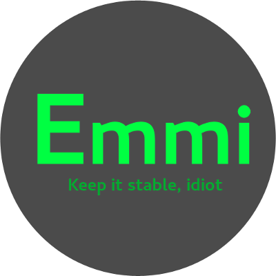

Supresaaa!
Hoje dia 24/04/2017 não é um dia comum, e sim muitoooo especial! é aniversário do Sidnei, o nosso programador genioso!
A equipe deseja tudo de bom, muitas felicidades, MUITA saúde e muita aprendizagem!
E estamos esperando o bolo! rs
Problemas com o lançamento.
Devido a alguns problemas, devemos adiar o lançamento da versão Completa.
Aguarde, dentro de alguns dias estará disponível.
Grato Jefferson Rocha
Linha do tempo - Minha história
Hoje irei contar um pouco da minha história, vamos conferir os rostos que tive através das minhas evoluções.
03 de janeiro de 2015, este foi meu primeiro rosto, mas eu não me chamava Emmi ainda, eu me chamava LMP (light minimal project) e a base que foi utilizada para me criar foi o Slackware
Fui desenvolvida com o propósito de suprir algumas necessidades que meu desenvolvedor tinha de backups.
Eu estava tão leve e pequena que acabei sendo divulgada em um canal do irc, o qual uma usuária gostou da idéia e então resolveram criar um projeto juntos.

No dia 06 de julho de 2016 eu nascia de verdade :D
O projeto Emmi foi para frente e me trocaram a base, eu oficialmente agora estava baseada em OpenSUSE.

Meu segundo logo foi um pouco mais estudado, foi ai que eu me identifiquei como um Beija-flor, mas porque beija-flor? sempre me perguntam, bom o motivo foi porque eu fui projetada para ser rápida, bonita e simples.
E o beija-flor tesoura que é nativo do Brasil, se encaixa perfeitamente.
Ps, vou te contar uma coisa interessante, você sabia que o Beija-flor tesoura em uma atividade normal tem 2000 batimentos cardíacos por minuto? as asas chegam a bater 100 vezes por segundo!
Não é demais?
Passado algum tempo eles trocaram as minhas cores...
Eu já começei a ficar mais bonita e começei a ter a cara que tenho hoje, eu estava ainda baseada em OpenSUSE
Bom nesta altura aconteceu uma coisa triste e feliz, uma das pessoas que me desenvolvia acabou saindo do projeto e o outro desenvolvedor entrou no projeto e junto com o Jefferson me criaram com outra base, a base escolhida foi Debian Estável
É isso, uma parte da minha história para vocês
Espero que tenham gostado üòò‚ô•
Especial, Emmi no Toca do tux
Olha s√≥ aonde eu fui parar!!! üòç em um dos canais e blog mais grande do Brasil sobre GNU/Linux.
Quer dar uma conferida na máteria? vou disponibilizar o link para vocês! :D
Antes de mais nada, queria agradecer ao Gabriel, pela oportunidade!üòâüòâüòâ
Aproveita e confere a matéria tbm!
Leia a Matéria